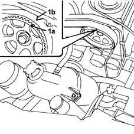
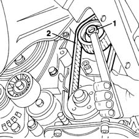
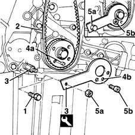
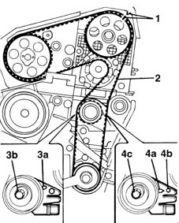

1032B14 toothed timing belt - r + r for timing adjustment or replacement versions with air conditioner
- Path
- Procedures > 10 ENGINE UNIT > 1032 TIMING SYSTEM > 1032B belt timing system > 1032B14 toothed timing belt - r + r for timing adjustment or replacement versions with air conditioner
- Kind
- repair procedure (removal / refitting; the operation number is the code)
- Applies to
- engines: 1.9 JTD 8V; all production periods
- Interactive page
- https://sloeber94.github.io/elrnDB-fMltpl/en/#/2891366
Applies to: engines: 1.9 JTD 8V; all production periods
 Removing
Removing
 Refitting
Refitting4450B10 Front WHEEL (one) - R.R.
- 7055B64 Engine compartment DUST shield in front wheel arch (one), left or right - R.R.
1092G10 single engine belt r r
1092A12 crankshaft pulley - r+r for versions with air conditioner
1032D12 timing system protective cover(s) - r + r
1016A10 sound-proofing cover - r + r
1008C10 power unit upper reaction link r r
1008C14 engine link bracket - r r
1. Turn the crankshaft in its normal direction of rotation to align the notch on the toothed timing pulley (1a) with the notch on the cam cover (1b) (cylinder no. 1 at T.D.C.).

Applies to: engines: 1.9 JTD 8V; all production periods
1. Loosen the semi-automatic tensioning device nut.
2. Remove the timing belt.

Applies to: engines: 1.9 JTD 8V; all production periods
Refitting
Removing1. Remove the engine oil pump retaining bolt.
2. Fit the timing belt over the crankshaft gear.
3. Fit the pin of the tool for setting the engine to TDC.
4. Turn the crankshaft a little at a time to allow locating dowel (4a) on the pulley to fit into the hole on tool (4b).
 | Name | Country |
|---|---|---|
3 | Template | 1.860.905.000 |
5. Lock the tool in position using a nut (5a) and ordinary bolt (5b).

Applies to: engines: 1.9 JTD 8V; all production periods
1. Turn the toothed pulley so that the timing notches are aligned.
2. Finish fitting the timing belt, following the route shown.
3. Adjust the semi-automatic tensioner to bring the tensioner pointer (3a) to the maximum tension position, then lock nut (3b).
Remove the tool for checking T.D.C.
| Name | Country |
|---|---|---|
- | Template | 1.860.905.000 |
Rotate the crankshaft through two revolutions in its normal direction of rotation.
4. Slacken the nut securing the tensioner and carefully line up tensioner pointer (4a) with reference hole (4b), then tighten tensioner nut (4c) to torque.
 | Fastening | Component | Ø | Value (daNm) |
|---|---|---|---|---|
4c | Bolt | MOBILE TIMING TENSIONER | M6 | 2.5 |

Applies to: engines: 1.9 JTD 8V; all production periods
1008C14 engine link bracket - r r
1008C10 power unit upper reaction link r r
1016A10 sound-proofing cover - r + r
1032D12 timing system protective cover(s) - r + r
1092A12 crankshaft pulley - r+r for versions with air conditioner
1092G10 single engine belt r r
- 7055B64 Engine compartment DUST shield in front wheel arch (one), left or right - R.R.
Topics linked from this page (7)
- 1008C10 power unit upper reaction link r r
- 1008C14 engine link bracket - r r
- 1016A10 sound-proofing cover - r + r
- 1032D12 timing system protective cover(s) - r + r
- 1092A12 crankshaft pulley - r+r for versions with air conditioner
- 1092G10 single engine belt r r
- 4450B10 Front WHEEL (one) - R.R.
Topics that link to this page (21)
- B11 ENGINE STARTS WITH DIFFICULTY' / WHEN WARM
- D10 ENGINE IDLE IRREGULAR
- H21 STEERING WHEEL OSCILLATIONS/ VIBRATIONS / WITH THE VEHICLE STATIONARY
- S01 ENGINE KNOCK
- X01 EXCESSIVE FUEL CONSUMPTION
- 1016C11 single cylinder head-r r gasket for versions with air conditioner
- 1020D16 front crankshaft oil seal cover - r+r and replace gaskets for versions with airconditioner
- 1020D20 front crankshaft cover oil seal - replace for versions with air conditioner
- 1028H11 piston connecting rod set - r r
- 1032B47 toothed drive pulley - r r for versions with air conditioner
- 1032B53 driven toothed pulley (one) - r r for versions with air conditioner
- 1032C19 mobile timing belt tensioner - r r for versions with air conditioner
- 1032C31 fixed timing tensioner - r r
- 1036B10 overhead camshaft - r r on vehicle
- 1060E10 pressure pump - r r
- 1060E30 pressure pump pulley - r r
- 1060E40 supplementary pressure pump - r r
- 1060G22 cam angle sensor - r r
- 1072B10 inlet manifold - r + r and replace seal
- 1088C12 water pump - r+r for versions with air conditioner
- 4130B32 power steering pump mount - r r